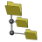

4.3. PLM documents
PLM-supported document management with the hyperMILL® PLM Connector. → | PLM Connector |
The hyperMILL® PLM Connector is a software application that provides an interface between a PLM system and OPEN MIND software. This software makes it possible to search for documents directly in the PLM system. CAD documents can be downloaded to the local computer to perform CAM programming with hyperMILL®. All hyperMILL® project data is automatically combined, added to the PLM system, and versioned there. The complexity of a PLM system is reduced to the level required for CAM programming. The hyperMILL® PLM Connector can be adjusted to a large extent to the requirements of a company and the individual configuration of a PLM system. This software documentation therefore describes a typical implementation as an example.
The PLM system itself must be adapted in order to be able to create a data object that can contain hyperMILL® data. A software installer is provided for this purpose.
The hyperMILL® PLM Connector supports the PTC Windchill PLM system. Support for other PLM systems is available on request.
Note
Data must be organized into projects before it can be automatically combined. For this reason, hyperMILL® PLM Connector automatically enables the Project option in → in the → → command.
Examples of typical workflows
Start work preparation for a new project:

Continue work on a project:

Continue working on an opened project once it is checked in:

Search
Search for documents
Search for documents stored in the remote PLM system. The search works roughly like in the PLM system itself, and offers selected commands necessary to work in hyperMILL®.
Enter a search string.
The search string must consist of at least three characters. This constrains the scope of the search in advance.
Select one or more of the following document types Types for display, otherwise the search cannot start:
hyperMILL docs: Shows all documents created by hyperMILL® in the PLM system.
CAD docs: Shows original CAD data in a range of formats, from which
*.hmcprojects can be generated.
In the PTC Windchill PLM system, it is also possible to show the PTC Windchill
*.wtpartdata records for analysis purposes that are used to manage all versions, components, assemblies, and so on, of a project. They cannot be checked in or out for local editing..The
*.hmparchive file format contains all hyperMILL® project data for management in the PLM system.Refine searches using search criteria in Filter:
- All
Show all versions of searched documents.
- Release only
Only show versions of searched documents in the ‘Released’ status.
- Latest
Only show the last version of the searched documents.
Use Search to start the search process.
The found documents appear in a table with their respective document properties. The table shows selected document properties from the PLM system. The selection can be adjusted if necessary.
Using the search result
To use a CAD document or a hyperMILL® document, click the table row with the required search result to highlight it.
Then select an action Actions:
 Create new hmc: Downloads a CAD data record, the data[1] is converted, generating an
Create new hmc: Downloads a CAD data record, the data[1] is converted, generating an *.hmcdocument that is saved in the folder selected under → → → . The original downloaded CAD data record is then automatically deleted on the local computer.Add to hmc: Downloads a CAD data record. The data format[1] is converted and inserted into a document that is already opened locally. This can be used, for example, to insert the CAD data for a fixture into the project. Metadata from the data record being inserted is discarded. All entities are placed on an additional layer. The number of the part is used as the layer name.
Open in hyperMILL: Downloads an
*.hmcfile and opens it directly in hyperMILL® to start or continue CAM programming.Save as: In the current hyperMILL® document, replace the associated CAD data record with another CAD data record. In other words, thereby reuse existing job list structures for another CAD data record, for example.
Clear results discards the displayed search results.
Document
Shows information on the currently open local document.
hyperMILL document: Name, Version, Status, State, Modified by, Last modification as information on the hyperMILL® document in the PLM system. This information is only generated after initial check-in in the PLM system. The selection of metadata can be adjusted if necessary.
The version of the hyperMILL® document on the server is more recent than the local version.
If a document has been checked out by someone else, this will be pointed out.
A document that only exists locally is edited.
Working with the latest version and checked-in status.
For Version: If a warning indicates that the local version is out of date, download the latest version.
For Version: Create a next revision, for example, A.3 becomes B.1 or 00.3 becomes 01.1.
For Status: Change the status of a document, for example, when CAM programming is finished and the status should be changed from “In Work” to “Released.” Normally, documents in the “Released” state cannot be checked out. (It depends on the guidelines that are set for the PLM.)
: ForLocation: Specify a destination on the server for saving the data. To do this, first select the topmost structural unit in the settings in Context selector.
Reference CAD part: File name, Version, Status, State of the original CAD data (for example, from design) in the PLM system at the time the
*.hmcfile was generated. The selection of metadata can be adjusted if necessary.The version of the CAD data on the server is more recent than the local version.

If data has been checked out by someone else, this will be pointed out.
No CAD reference part exists on the server. CAD data was simply downloaded.
Working with the latest version of the CAD data and checked-in status.
For Version: If a warning indicates that the local version is out of date, download the latest version into the current document.
Select an action in Actions for the currently open local document:
Upload: Add a current state of work as a personal “backup copy” not visible to others in the PLM system. The document retains the “Checked-out” status. No further iterations of the document are generated in the PLM system. Newer uploaded files overwrite older files.
Check in: Uploads and checks in the locally opened project. All associated hyperMILL® data is collected, compressed, and also uploaded. Successful check-in is confirmed by the message “Check in complete.” The data is inserted into the hyperMILL DOC as Primary content.
Check out: Check out the locally opened document again. This protects the data from being modified by others.
Undo check out: Reverses check out, discards all local changes.
, Check status: Checks whether the locally available project data still has the same version as the checked-in data.
Save as: In the current hyperMILL® document, replace the associated CAD data record with another CAD data record. In other words, thereby reuse existing job list structures for another CAD data record, for example.
Revise: Based on a data record in the “Released” status saved in the PLM system, Version A, creates a branch data record, Version B.1, for editing.
Select PLM folder: Specify a destination on the server for saving the data. To do this, first select the topmost structural unit in the settings in Context selector.
Settings
Login
Use this option to enter the User, Password, and Address for access to the PLM system.
Apply the entries with Apply.
Context selector
Preset one of the topmost structural units on the server to store the hyperMILL® documents. To do this, select an entry from the Context drop-down menu and apply it withApply.
Local folders
Select a local folder as the working folder Working and a folder for downloading Download.
Windchill portal URL (web services)
Address: If the PLM system PTC Windchill and its browser portal have two different URLs, enter the browser portal address.
NC mode
NC basic structure: The NC files are loaded into PTC Windchill in the Attachments area.
Log
Messages as a log.
Use Clear log messages to delete the log messages.